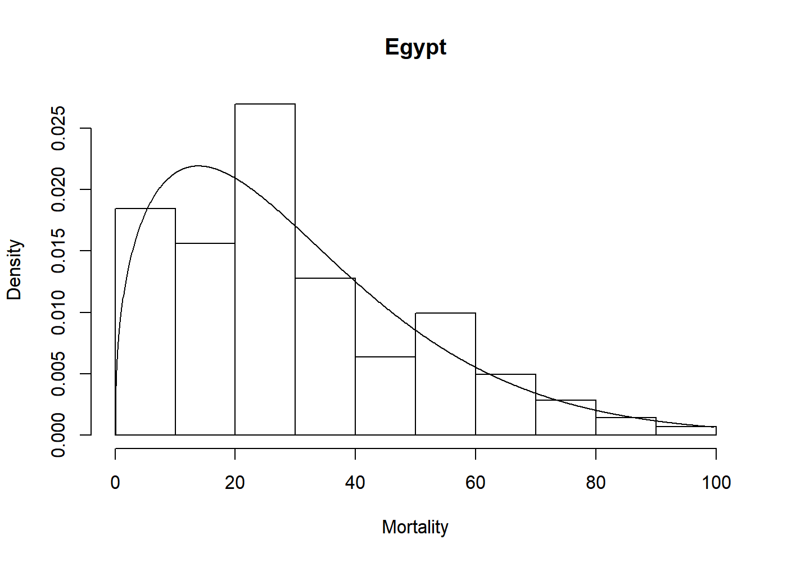

Overview
An R-package for fast, easy, and reliable maximum likelihood estimation for a selection of parameteric univariate densities. In addition to basic estimation capabilities, this package support visualization through plot and qqmlplot, model selection by AIC and BIC, and confidence sets through the parametric bootstrap with bootstrapml.
Usage
The core of univariateML are the ml*** functions, where *** is a distribution suffix such as norm, gamma, or weibull.
library("univariateML")
mlweibull(egypt$age)
#> Maximum likelihood estimates for the Weibull model
#> shape scale
#> 1.404 33.564Now we can visually assess the fit of the Weibull model to the egypt data with a plot.

Documentation
For an overview of the package and its features see the overview vignette. For a list of implemented densities see the start of the details vignette. For an illustration of how this package can make an otherwise long and laborious process much simpler, see the copula vignette.
How to Contribute or Get Help
If you encounter a bug, have a feature request or need some help, open a Github issue. If you miss a particular estimator, make an issue explaining why its implementation should be prioritized.
We encourage you to make a pull request if you wish to make a contribution to this package. If you wish to contribute a new maximum likelihood estimator to this package please read this page first.
This project follows a Contributor Code of Conduct.